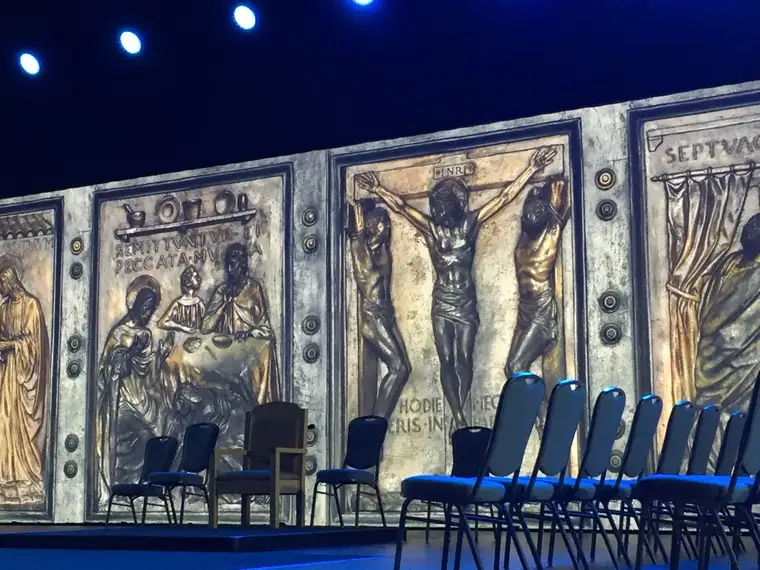
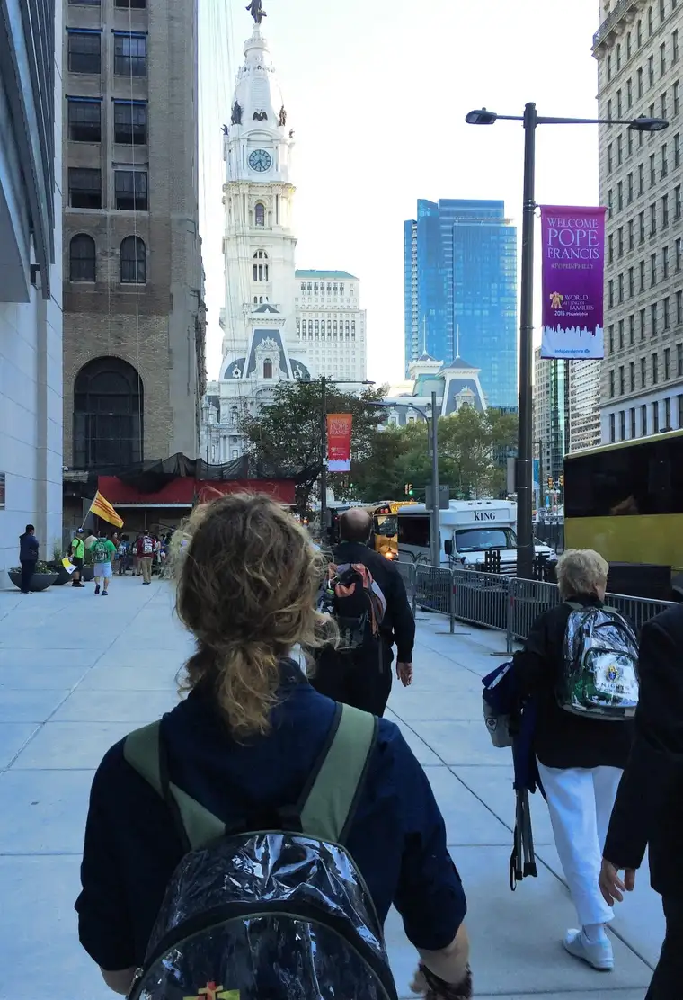
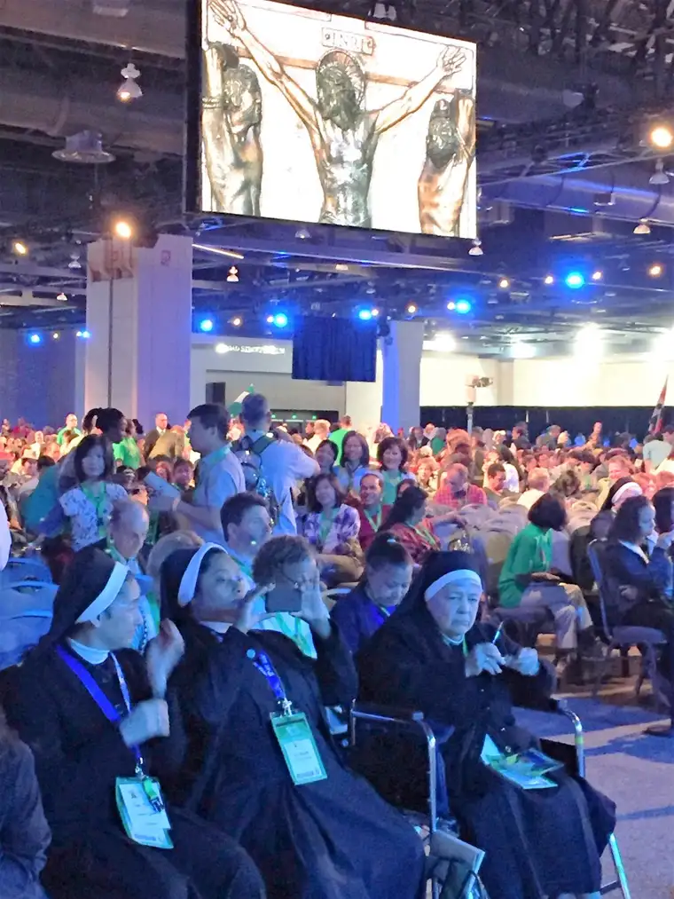
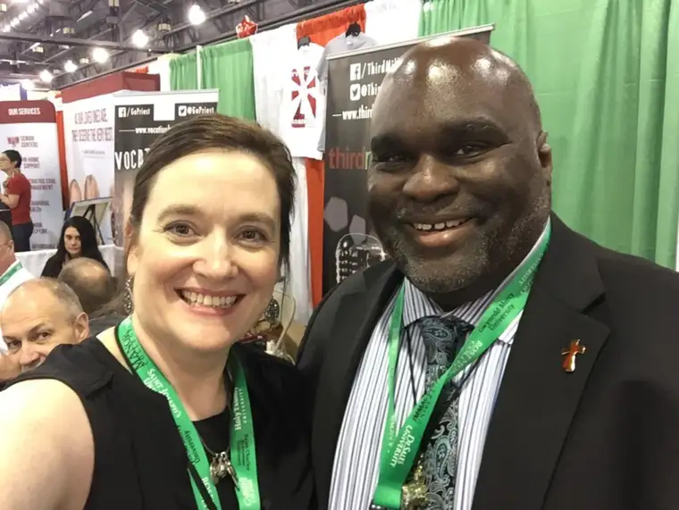
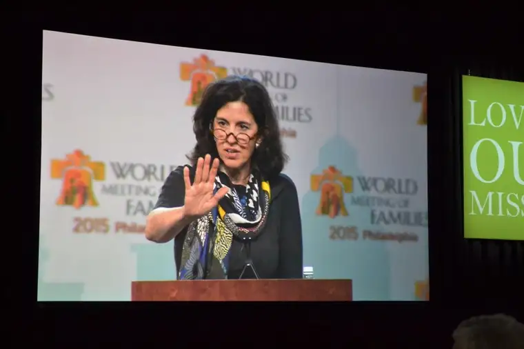
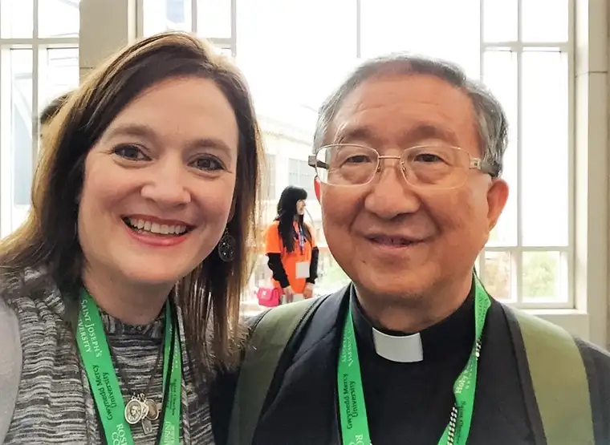
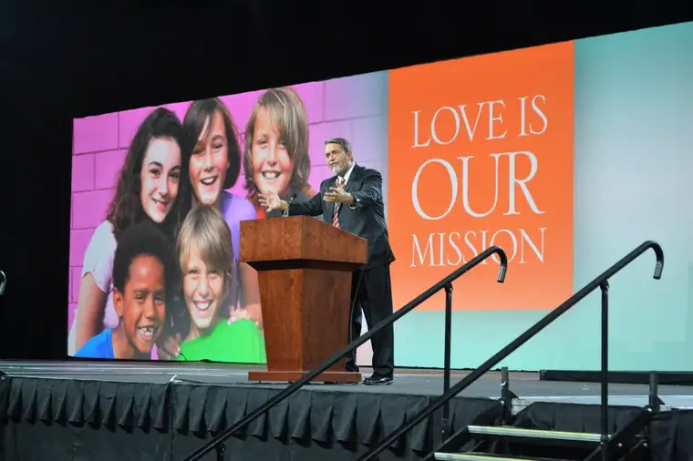
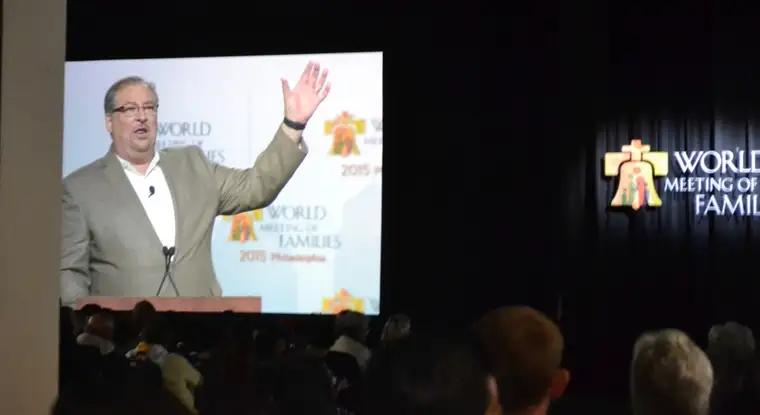
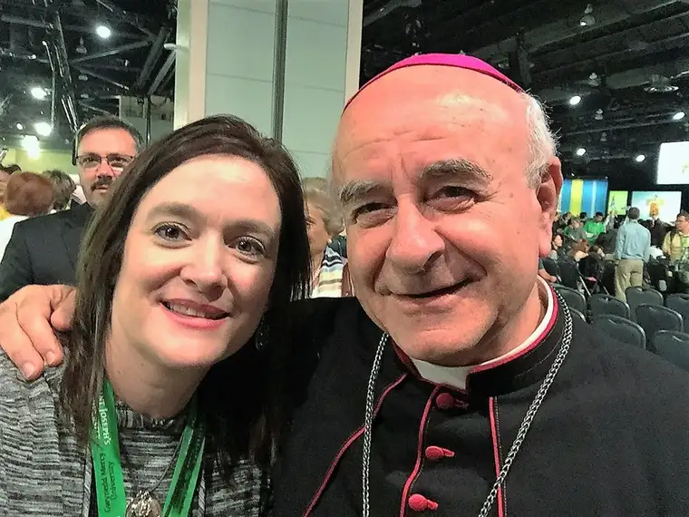

[The following represents the first installment in a series of blog posts that will flow from my recent trip to Philadelphia, where I experienced the 8th World Meeting of Families as a reporter for the Diocese of Fargo, and helped greet Pope Francis as he arrived in the United States for the first time, in the “City of Brotherly Love.”]
{kind=link}

{kind=link}
It’s been hard for me not keeping up with this blog during my week away. But, surprisingly, I only opened my laptop twice, and then, just to pull some photos from my phone to make sure I had adequate space should I happen to see Pope Francis driving by in his Pope mobile. Which, gratefully, I did.
The whole experience was unforgettable, but our wonderfully crammed schedule had us so busy — first with the conference itself, and then scurrying around the city, and waiting in long lines to meet our pontiff — that it was simply impossible to do an adequate job of filing thorough reports. My on-the-ground reporting happened mostly through social media — Tweets and Facebook updates.
But now that I’m home, and my most urgent post-trip deadlines are behind me, I realize I am still sitting on a treasure. So I am going to dedicate the majority of my posts here in the coming weeks to the unpacking of that experience.
Indeed, my large duffle bag — which took a hit in the trip and came back wounded — is still bulging, and my mementos remain mostly in a plastic World Meeting of Families backpack I acquired in Philly. So I am unpacking everything figuratively even as I am continuing the literal unpacking.
In many ways, I am just beginning to discover what I was called to Philly to experience. Thank you for coming along with me in the pondering.
{kind=link}

Bubble in the belly of the city. I want to start by describing something I had not anticipated beforehand — the feeling of being in a bubble that protected us in some ways, and kept us away in others, from the real world during most of our time in Philly. The only experience that compares goes back to 2009, when our city was inundated by flood waters. The National Guard descended, helicopters hovered, and the rest of the world watched on cable TV and online. The customer service reps from the East Coast seemed to know more about what we were experiencing than we did here in the Fargo and surrounding areas. From our bubble of trying to survive the ordeal, we could only focus on what was right in front of us. I stayed close to the radio to get timely updates, unable to consume the wider picture the rest of the world was witnessing. 
{kind=link}
In a way, that’s how it felt in Philly, when friends were asking if we were watching the pope’s touchdown in Washington and New York, and I barely had time to squeeze out a, “Just got out of Mass, on my way to a breakout session.” It felt strange, especially as a journalist, not being able to see from the bird’s eye view, and yet it also seemed right to, just for those few days, ignore it all. For the most part, we stayed away from the mainstream news and focused on the beautiful gift of the worldwide gathering unfolding before us; there simply wasn’t time for much else.
And yet, we knew that our time was coming. We knew that soon, the pope would be near us, and that we would be at the center of things. We were patient, willing to wait for that, knowing how sweet it would be, in due time.
In Philly I learned I am much faster taking notes on my phone than writing on notebook paper. By tapping away with just my right pointer finger, I was able to freeze a nice-sized portion of the gems of the conference. I did this so that I could remember, but also, to bring them back to you. These are just some of the sprinkles on the frosting of the icing of the cake. May you taste, too, and enjoy!

Bishop Robert Barron:
“We’re the ones on the march. Hell has something to fear from us. But it won’t happen if religion remains a hobby. Authentic Christianity is a religion on the march. And we don’t go out violently but in love.”
***
Cardinal Robert Sarah of Guinea:
“The family is meant to spread its life to those around it…Faith needs a place where it can gestate and grow and become a living experience. God created the family as the place that would praise God and speak of his fruitfulness, of his goodness. In the family is the living memory of the fidelity of God…The family carries in itself the future of humanity. It is the custodian of the future.”
***
{kind=link}

Deacon Harold Burke-Sivers:
“John jumped like a mountain goat (when he recognized his Lord in Mary’s womb); Mary was the monstrance holding in her womb the body, blood, soul and divinity, so John was the first adorer of Jesus in the monstrance. Just imagine what this world would be like if every man looked at a woman and saw the monstrance!”
“If I want my daughter to marry the man of her dreams, I need to show her what one looks like!”
***
{kind=link}

Professor Helen Alvare’:
“With God, even if we are one in the room, we are in relationship.”
“When you live elbow to elbow with others, there are relentless opportunities to learn to love. Nothing prepares you more for being human (than being in a family).”
“Family life gets us to a wider circle. You find yourself in losing yourself in the love of other people.”
***
{kind=link}
{kind=link}

Archbishop Hee-joong Kim of the Republic of South Korea:
“The church emphasizes that the crisis of the family is the crisis of society…As Christians we need to help the family recover from destruction. Evangelization that begins in the family is the most important issue.”
***
{kind=link}

Scott Hahn:
“God is not a solitary being; God is an eternal family.”
“Adam left his family a legacy of dysfunction…but we’re still God’s family. God bound himself to us eternally from the beginning.”
“In a contract, there is an exchange of promises, of property. In a covenant, you invoke the holy name of God. It’s not just a promise you exchange, but an oath you make. A contract is motivated by self-interest and profit; a matter of laws. But a covenant is a matter of love.”
“A covenant far surpasses a contract. It’s like confusing marriage with prostitution.”
“Marriage is not subject to vote; the truth about marriage is rooted in the word of God…written into the fabric of reality at the dawn of creation.”
“When parties violate a covenant they break themselves…This is a prescription for our health, not a divine imposition we’re stuck with.”
“The sacrament is what makes marriage possible, offering the grace that enables us to fulfill…the mutual interior formation of husband and wife.”
“Mercy doesn’t just lead us to forgiveness. It leads us to conversion.”
“We have to allow God to use our spouse. Our spouse is a portal to grace.”
“Pope Francis is the New Evangelization in High Definition.”
“The Joy of the Gospel isn’t just a warm fuzzy feeling. God isn’t renewing a contract with his factory workers. He’s renewing a covenant with his family members.”
***
{kind=link}

The Reverend Rick Warren, pastor of Saddleback Church:
“God is more interested in your character than your comfort.”
“God will teach you peace when the beans are burning…and the dog is eating the head off the Barbie doll.”
“How do we serve a God we can’t see? We serve God by serving others. Because we’re going to serve God in eternity.”
“God put you on this earth to make a contribution.”
***
Cardinal Sean O’Malley:
“The big decision is love. We have come to believe in God’s love. And we need to see the world through God’s eyes to see what’s beautiful, what’s important…”
“In God’s plan families are missionaries…and families ought to be a place where the gospel radiates outward…”
“The crowd is a collection of individuals thrown together by circumstance; the crowd pushes away, where community brings people closer to Christ. Our task is to change the crowd into a community. And it must begin with our families.”
***

{kind=link}

Archbishop Vincenzo Paglia, president of the pontifical council for the family:
“We are aware of the difficulties the families have before them today. We see the results of the tragedies. Our children. Our elderly. It is no longer enough to keep doing what we have always done. We need a new passion for the family, and a more generous and creative love to support it. We cannot turn our backs on families that are hurting. We must help heal them…We must run to help hurting families find new strength.”
“Jesus wasn’t interested in opinion polls. What he wanted was the hearts of the disciples. ‘Who do you say that I am?’ Peter’s answer was clear: you are the Messiah, God.”
“Families are saved only if there is a spark of his love within them. Mary and Joseph welcomed Jesus; the pope offers us Jesus. The faith can change the world, can lead us beyond ourselves. Let us ask the Lord to rediscover the vocation and mission of our families. And soon. Amen.”
***
Pope Francis, Papal Mass at Benjamin Franklin Parkway:
“Do not hold back anything good; rather, help it grow, Jesus said. Faith opens a window to the presence and workings of the Holy Spirit.”
“Love is shown by the little things. Faith grows when it is practiced and shaped by love. Jesus invites us not to hold back these little miracles.”
“Children are capable of boundless generosity. Would that all of us be open to these little miracles as signs of love.”
“Let us participate in a prophecy of peace.”
Amen…
{kind=link}